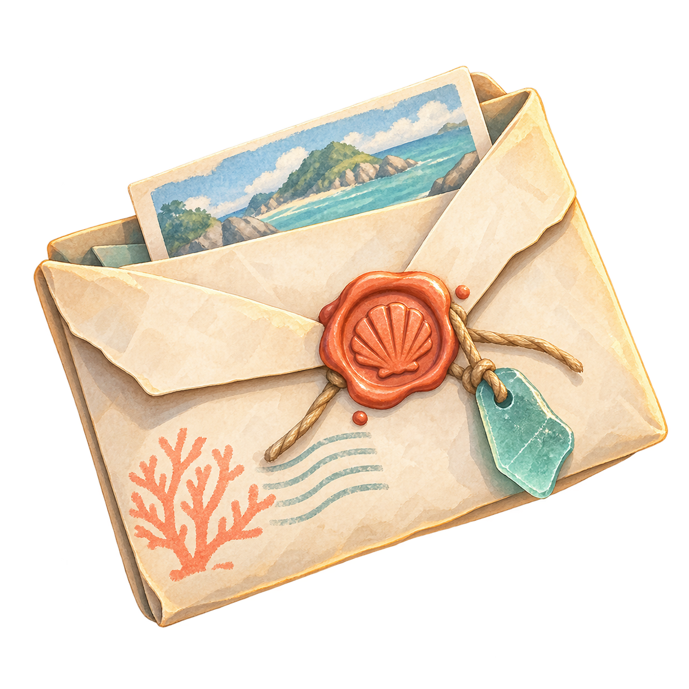
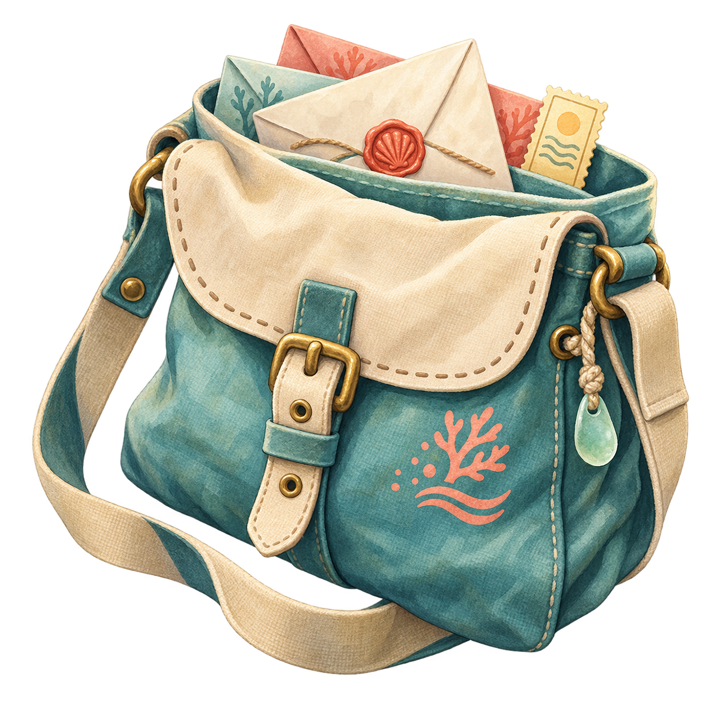
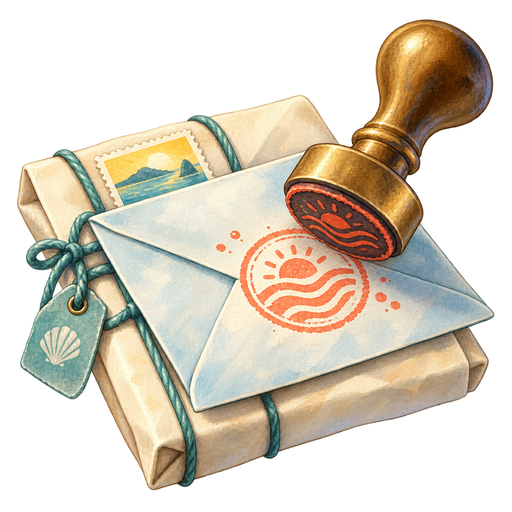

当前委托
蓝潮岛的回信
收件人 艾琳 · 北侧码头
- 所需邮件
- 蓝色信封 ×1
- 航程
- 2.4 海里
- 完成奖励
- 邮票 +40
港口留言
“退潮前，北侧码头会留一盏灯。”
先查看委托，再整理邮袋。
主线进度 0 / 3
01 · HARBOR / 今日潮汐 06:40
一封等待回信的委托已经抵达。确认目的地与奖励后，开始本次邮务航行。

当前委托
收件人 艾琳 · 北侧码头
02 · MISSION / 委托单 TP-042
读完委托，再把任务加入本次航行。
BLUE TIDE ISLAND · NORTH PIER
“请把港口收到的蓝色信封带来。退潮前，北侧码头会留一盏灯。”
03 · MAILBAG / 草稿与保存是不同状态
选择蓝色信封并保存；只有“已保存”才满足出航条件。

任务所需 0 / 1
选择并保存“蓝色信封”后可以前往地图。
05 · SAILING HUD
目标：北侧码头 · 距离 2.4 海里
W 加速，A/D 调整舵向；进入灯塔圈后按 E 投递。
06 · RESULT / 蓝潮岛北侧码头
信件已安全送达；奖励仍需手动领取。

DELIVERED · 06:58
灯塔亮起，蓝潮岛北侧码头恢复平静。
投递成功邮务记录已写入航海日志
领取奖励后可返回港口继续接取任务。